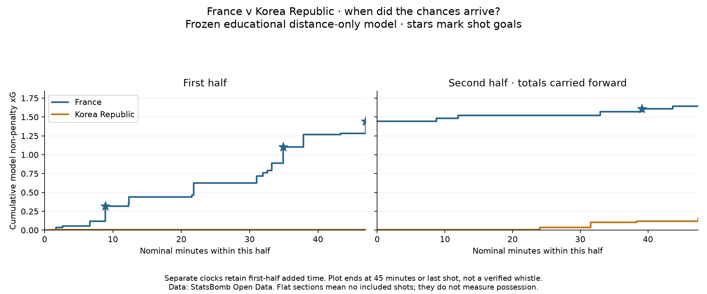

Football analyst training · Project lesson 30
Follow the chances through the match.
We already know the totals. Now we ask when those chances happened.
1. Add as the game progresses
A team's first shot is 0.10 xG: its running total becomes 0.10. The next is 0.20: the total becomes 0.30. A miss still adds its estimated chance value. This running sum is called cumulative xG.

2. Read the lines
- A jump means a shot. A larger jump means higher estimated chance quality.
- A flat section means no included shots. It says nothing by itself about possession.
- A star marks a goal. It does not add an extra 1.0 xG.
The panels separate the halves so first-half added time stays in the right period. The second-half curve starts with the total already accumulated, rather than returning to zero.
3. Explain the actual finding
Korea Republic added 0.009 in the first half and 0.149 in the second. These are our distance-only model's non-penalty estimates, not provider xG. The model was not changed.
4. Turn a finding into a video question
Did France's shot locations or attacking patterns change after halftime? This is something to investigate with video and event context. The timeline cannot prove a tactical cause, finishing skill or possession control.
Open 30_cumulative_xg_timeline.py in Spyder. In build_timelines, find total += row['model_probability']: it means “add this shot's probability to the total so far.” Run the script to see the chart locally.
Write a two-sentence description of the halves and one video question. Ask your teacher to review your wording or explain any line.
Example reasoning
“France accumulated most of its model npxG in the first half: 1.445 versus 0.198 afterward. I would review its shot locations and attacking patterns after halftime before explaining the difference.” This reports the pattern and leaves its cause open.
Previous lesson · Match xG reference · Full report and timing rules